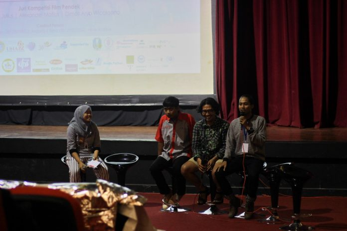
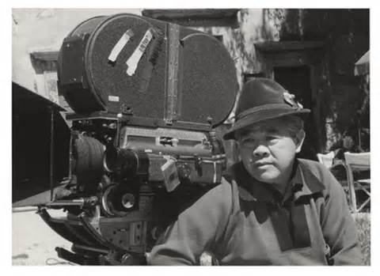

rekam semua dengan dibalut keindahan cinematic.
Revenant sinematografi terbaik, Vikander aktris pendamping terbaik
The Revenant memenangkan sinematografi terbaik, sementara aktris Denmark Alicia Vikander memenangkan penghargaan Oscar sebagai aktris pendukung terbaik untuk perannya di film The Danish Girl
Baca selanjutnya.
Sinematografi Berkompetisi dalam Psikofest

Psikologi Film Festival yang memasuki tahun keenam menjadi ajang mengasah kreativitas mahasiswa. Dalam festival bertema ”Dialog Damai” kali ini, terdapat dua kategori, yaitu pelajar dan umum...
Baca selanjutnya.
Dari Pemungut Sampah hingga Sinematografi Favorit Hollywood

Halaman utama mesin pencari Google hari ini, Senin (28/8) menampilkan sebuah foto hitam putih seseorang. Jika kursor Anda dekatkan, maka keterangan namanya keluar, James Wong Howe. Siapakah dia?